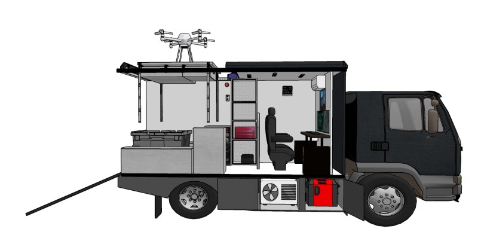

MOBILITY × TECHNOLOGY × SOLUTIONS
기술은 현장으로.
솔루션은 미래로.
특장차 개발과 이동형 현장 서비스, 재난대응 체계, 스마트 정비·관제 플랫폼까지. 불칸모터스 미래사업본부 특장사업부의 사업 방향을 소개합니다.

CONCEPT RENDER / DRONE STATIONWHO WE ARE
움직이는 기술로
현장의 문제를 해결합니다.
불칸모터스 미래사업본부 특장사업부는 다양한 현장에서 필요한 기능을 차량에 결합하고, 차량과 장비의 운영·정비를 연결하는 미래 사업 모델을 구상합니다.
제조·정비·운영관리의 개별 요소를 하나의 솔루션 관점에서 제안하며, 지자체·공공기관·복지기관·민간사업자의 실제 운용 환경을 고려합니다.
OUR BUSINESS
4개의 사업 축,
하나의 현장 중심 철학.
개별 기술을 연결하여 더 효율적인 이동형 서비스를 설계합니다.
SPECIAL VEHICLE GALLERY
차량의 형태에서
현장의 가능성을 보다.
제공된 설계도 및 3D 콘셉트 렌더링을 바탕으로 구성한 기술 갤러리입니다.
※ 설계도와 3D 렌더링은 기획·설계 자료로, 실제 제작 완료 또는 납품 실적을 의미하지 않습니다.
HOW WE THINK
요구사항부터 운영까지.
현장을 기준으로 설계합니다.
현장 요구 분석
차량 운용 환경과 기관의 실제 문제, 필수 기능을 파악합니다.
맞춤형 솔루션
특장 구조·장비 배치·운영 시나리오를 구체화합니다.
제작·구축 계획
법규·안전·협력체계를 고려해 구현 범위와 추진 단계를 정합니다.
운용·유지관리
예방점검, 정비 연계, 데이터 활용 방안을 검토합니다.
VULCAN MOBILE TECHNOLOGY PLATFORM
정비를 넘어,
데이터 기반 운영으로.
특장장치의 전기·유압·기계계통 점검, 정비 이력, 부품 연계와 예방정비 데이터를 하나의 관리 체계로 묶는 스마트 플랫폼을 구상합니다.
※ 아래는 기술 구성 개념이며 실시간 운영 중인 시스템 화면이 아닙니다.
WHO WE SERVE
서로 다른 현장, 같은 목표.
지자체 · 공공기관
재난 대응, 이동형 현장 지원, 공공 차량 운용
복지기관 · 특수학교
휠체어 리프트 차량의 안전한 운용과 유지관리
특장차 운영기관
현장 점검, 장비 진단, 운영·정비 이력 관리
제조 · 기술 협력사
맞춤형 특장 개발 및 제조·정비 협력 모델
LET'S COLLABORATE
새로운 현장의 과제,
함께 검토하겠습니다.
특장차 개발, 모바일 정비, 재난대응 시스템, 기술 협력과 관련한 사업 문의를 위한 공간입니다.
사업 협력 · 기술 문의
공식 문의 수단과 담당자 정보가 확정되면 이 영역에 이메일·전화 또는 보안 문의 폼을 연결합니다.
- 담당 조직
- 불칸모터스 미래사업본부 특장사업부
- 문의 방법
- 공식 연락처 등록 예정
현재 온라인 문의 전송 기능은 활성화되어 있지 않습니다.